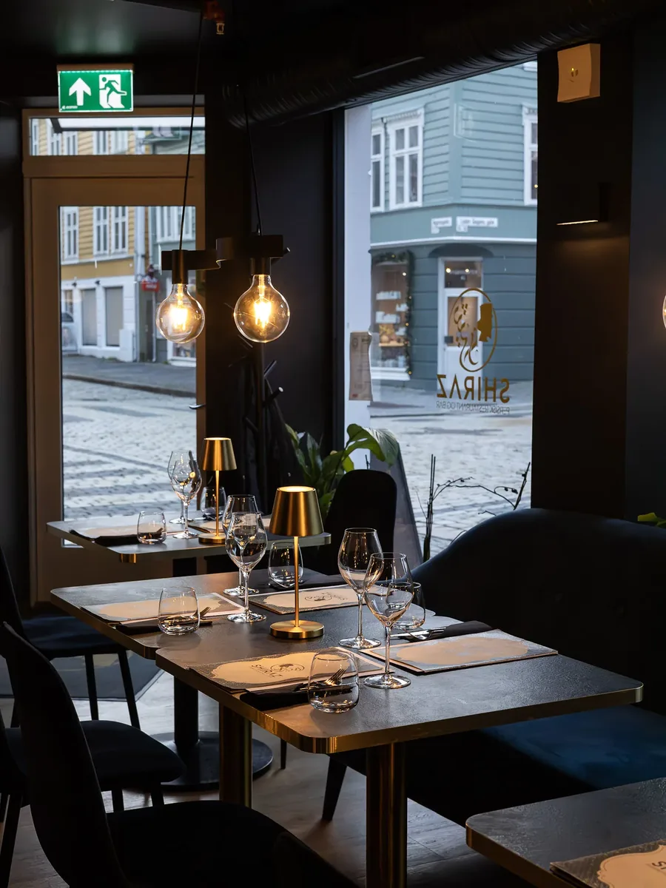

Persian restaurant & bar · Bergen city centre
A journey through the flavourful Persian kitchen.
About Shiraz
Shiraz is named after the city that for centuries has been known for its poetry, wine and hospitality. Our dishes are prepared by our head chef – a mother with long experience from her own kitchen – using recipes handed down through generations: fragrant rice dishes, freshly grilled kabab skewers and rich stews, each with its own story of tradition and nostalgia. Whether it is an intimate dinner for two or an evening with friends, we welcome you to genuine, homemade Persian food culture in pleasant surroundings.
Tue–Sun from 15:00 · Closed Monday
Table booking
Booking a table with us is easy. Secure your place for your next dining experience, whether it is a romantic evening for two or a get-together with friends.
Book a tableTo your door
Enjoy our dishes in the comfort of your own home. Order online and our kitchen takes care of the rest while you relax.
Order takeawayFrom the kitchen
The atmosphere at Shiraz
Golden light, soft music and an atmosphere that suits an ordinary weeknight as well as a celebration. The restaurant combines authentic flavours with surroundings that turn any dinner into an occasion – whether it is a quiet evening at the bar or a long dinner with good friends.
See the full menuGuest reviews
We are proud of the feedback we get from our guests. Read what others think, or share your own experience after your visit – on Tripadvisor or Google Maps.
Visit us
| Monday | Closed |
| Tuesday – Thursday | 15:00 – 21:30 |
| Friday – Saturday | 15:00 – 23:00 |
| Sunday | 15:00 – 21:30 |
